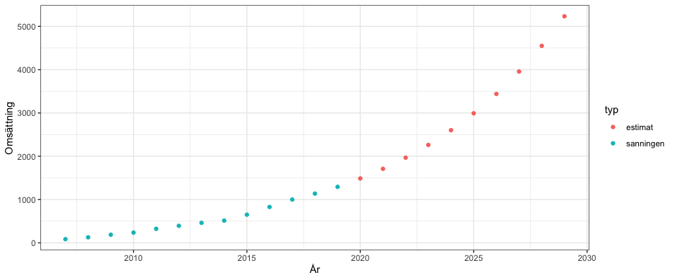
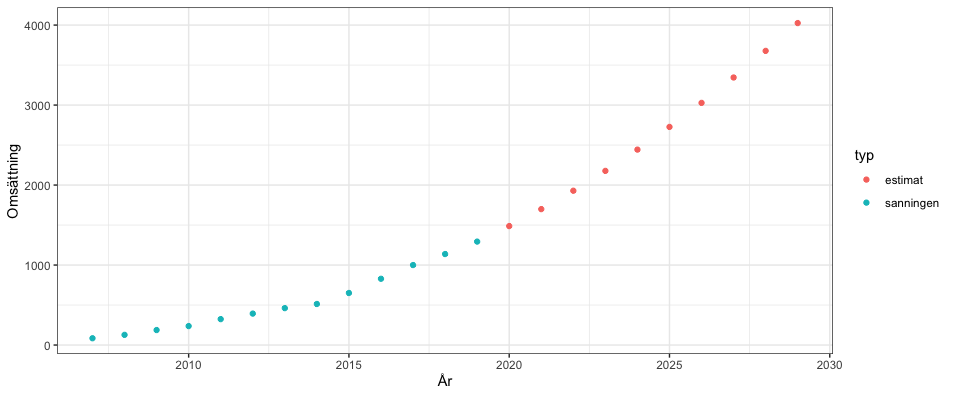
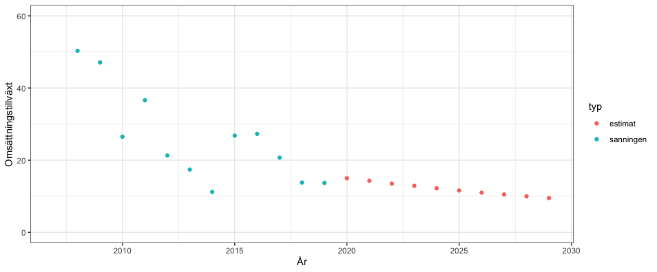

# install.packages("devtools") # Om du behöver installera devtools, kör denna då genom att ta bort #
devtools::install_github('jakobjohannesson/borsdata', build_vignettes = TRUE) # Installerar paketet
library(borsdata) # Laddar in paketet i din lokala miljöDCF med hjälp av Börsdata API
Borsdata
DCF
API
Denna gång hjälper jag dig komma igång med en DCF analys med hjälp av Börsdata API och mer specifikt de nyckeltal som finns där!
Hur kan vi genomföra en DCF med hjälp av Börsdata API? En discounted cashflow (DCF) är en standardmetod för att värdera ett företag och med hjälp av Börsdata API kan vi genomföra en DCF. I en DCF analys så kommer ett företags framtida kassaflöden att estimeras och sedan diskonteras tillbaka till dagens värde på företaget. Nackdelen med denna värderingsmetod är att många antagande finns med, det är sällan som verkligheten passar perfekt in i en modell. Ingen vet vad som kommer att hända i framtiden, därför är det viktigt att ha en säkerhetsmarginal om din kalkyl inte blir exakt som beräknat. Om du är helt ny till att göra en DCF rekommenderar jag att läsa mer om det på investopedia, innan du genomför denna guide. Jag har även en tidigare guide på hur mitt R paket borsdata fungerar här samt en uppföljning med mer information om hur du använder dig av börsdata kpi här.
Diskontering innebär att pengar i framtiden är värda mindre än pengar idag. Exempel: om du har 100 SEK idag så är det bättre än att ha 100 SEK om ett år från nu. Vad värderar du 100 SEK om ett år jämfört med 100 SEK idag? Låt säga att 100 SEK om ett år är idag värt 90 SEK, då diskonterar vi framtida pengar med 10 procent per år. Samma princip används för att värdera ett bolag, kassaflöden som är längre in i framtiden är värt mindre än vad pengar idag är värt.
En DCF är ingen silver bullet som löser alla problem i den eviga frågan vad bolag X är värt. Om det hade löst alla problem så hade matematiker varit världens rikaste människor, men bolagsanalys handlar minst lika mycket om mjuka värden som att utvärdera en ledningsgrupp, vallgravar, styrelse och andra mjuka värden som inte är helt enkla att mäta kvatitativt. Med detta sagt, tänk på att modellen är bara så bra som den input som du ger den och det absolut bästa är att bygga en egen DCF modell. Jag tror däremot att det är lättare att gå in och förstå konceptet genom att se ett exempel, därför presenterar jag en lösning på hur en DCF kan se ut genom att använda Börsdata API.
Kom igång: Installera paket & ladda in i R
Först behöver du ha en Börsdata API nyckel som du kan hämta här. För det andra behöver du ha R, vidare rekommenderar jag att använda Rstudio. Installera mitt R-paket borsdata genom att köra följande kod i R:
Andra paket som är nödvändiga för att göra en DCF i Börsdata API är tidyverse, tidymodels och lubridate. Installera dessa om du inte redan har dom och ladda i lokala miljön:
library(tidyverse)
library(tidymodels)
library(lubridate)
# Laddar in nyckel och anger bolagsid
key<-"<DIN API NYCKEL>" # API Nyckel
id <- 520 # Bolagsid - 520 är Bahnhof
# Hämtar KPI data
ar<-fetch_kpi_year(id,key) %>% slice(-1) %>% arrange(period) %>% arrange(year)
r12<-fetch_kpi_r12(id,key) %>% arrange(period) %>% arrange(year)
kvartal<-fetch_kpi_quarter(id,key) %>% arrange(period) %>% arrange(year)
aktiekurs<-fetch_stockprice(id,key) Om koden inte fungerar ovan, säkerställ då att du har alla paket och att din Börsdata API nyckel stämmer.
Vad är en rimlig omsättningstillväxt och rörelsemarginal?
Nästa steg i analysen är att undersöka vilken omsättningstillväxt och rörelsemarginal som bolaget i fråga har, ska vi lita på det målet som ett företag kommunicerar eller ska vi själva försöka ta reda på hur bolaget kommer att utvecklas kommande år? Det vi gör nu är att visualisera omsättningstillväxten och marginalerna som bolaget har haft historiskt för att få ett hum om trender. Detta steget är inte nödvändig om du redan vet vad som är en rimlig omsättningstillväxt och rörelsemarginal.
# Undersöker omsättningstillväxt och ebitmarginal
# Omsättningstillväxt
ggplot(ar,aes(year))+
geom_line(aes(y=Omsattningstillvaxt)) +
geom_smooth(aes(y=Omsattningstillvaxt), method = lm, se=FALSE) +
theme_bw() +
labs(x= "År", y = "Omsättningstillväxt", title = "")
ar2<-slice(ar, (nrow(ar)-5):nrow(ar)) # Tar ut sista 5 åren bara
ggplot(ar2,aes(year))+
geom_line(aes(y=Omsattningstillvaxt)) +
geom_smooth(aes(y=Omsattningstillvaxt), method = lm, se=FALSE) +
theme_bw() +
labs(x= "År", y = "Omsättningstillväxt", title = "")
# Enkel linjär modell
model<-lm(Omsattningstillvaxt ~ year, ar)
augment(model)
glance(model)
tidy(model)
summary(ar$Omsattningstillvaxt)
# Utveckling för rörelsemarginalen
ggplot(ar,aes(year))+
geom_point(aes(y=Rorelsemarginal)) +
geom_smooth(aes(y=Rorelsemarginal), method = lm, se=FALSE) +
theme_bw() +
labs(x= "År", y = "Rörelsemarginal", title = "")
ar2<-slice(ar, 15:20)
ggplot(ar2,aes(year))+
geom_point(aes(y=Rorelsemarginal)) +
geom_smooth(aes(y=Rorelsemarginal), method = lm, se=FALSE) +
theme_bw() +
labs(x= "År", y = "Rörelsemarginal", title = "")
# Rörelsemarginal
ar2<-ar %>% filter(Rorelsemarginal > 0)
model<-lm(Rorelsemarginal ~ year, ar2)
augment(model)
glance(model)
tidy(model)Nu vet vi ungefär vilken tillväxt och rörelsemarginal vi har att jobba med, då anger vi det i DCF modellen.
Använder Bahnhof som exempel
I detta exempel kommer Bahnhof att analyseras, anledningen varför Bahnhof analyseras är för att bolaget för förhållandevis stabilt och har angivit en prognos för sin omsättningstillväxt på 15 procent per år med en rörelsemarginal på 12 procent.
# DCF
growth <- 0.15*1.00^(0:9) # Omsättningstillväxt
ebitmarginal <- 0.2*1.00^(0:9) # ebitmarginal förändringVidare ska vi ange senaste årsredovisningens datum och senaste kvartalsrapporten. Du kan även justera investeringskostnader, evig tillväxttakt, skattesats osv. Hela funktionen har utvecklats sporadiskt, så det kan finnas delar som inte används längre.
most_recent_annual <- ymd(20201002) # Ange senaste årsredovisningen
most_recent_quarter <- ymd(20201002) # Ange senaste kvartalsrapport
wacc_start <- seq(0.06,0.08,0.005)
capex_takt <- 0.065
dep_amor_takt <- 0.045
evig_start <- 0.02
Motiverat_varde <- 0
nettokassa_nettoskuld <- r12$NettoskuldMkr[length(r12$NettoskuldMkr)]
antal_aktier <- r12$AntalAktier[length(r12$AntalAktier)]
aktiekurs<-aktiekurs$c[length(aktiekurs$c)]
# Datum
date<-Sys.Date()
date<-str_replace_all(date,"-","")
date<-as.numeric(date)
date<-ymd(date) #dagens datum
# Statiska inställningar
skattesats<-0.214
exit_start<-0.075
exit_steg<-0.005
evig_steg<-0.005
wacc_steg<-0.01
## Omsättning ##
sales_annual<-ar$OmsattningMkr
sales_kvartal<-c(kvartal$OmsattningMkr[length(kvartal$OmsattningMkr)-4],
kvartal$OmsattningMkr[length(kvartal$OmsattningMkr)])
Length_sales<-length(sales_annual)
snurra<-1
while (length(sales_annual) < (Length_sales+10)){
sales_annual[length(sales_annual)+1]<-sales_annual[length(sales_annual)]*(1+growth[snurra])
snurra<-snurra+1
}
sales_est<-sales_annual[(Length_sales+1):(Length_sales+10)]
sales_annual<-sales_annual[-(Length_sales+1):-(Length_sales+10)]
# EBIT
EBIT_kvartal<-kvartal$RorelseresultatMkr[length(kvartal$RorelseresultatMkr)]
EBIT_est<-sales_est*ebitmarginal
# Capex
capex<--kvartal$CapexMkr[length(kvartal$CapexMkr)]
capex_est<-sales_est*capex_takt
capex_est<-capex_est*(-1)
# Av- och nedskrivningar
dep_amor_est<-sales_est*dep_amor_takt
terminal_dep_amor<-capex_est[length(capex_est)]*0.95
dep_amor_kvartal<-kvartal$`EBITDA/Aktie`[length(kvartal$`EBITDA/Aktie`)]-kvartal$`EBIT/Aktie`[length(kvartal$`EBIT/Aktie`)]
# EBITDA
EBITDA<-EBIT_est+dep_amor_est
terminal_EBITDA<-EBITDA[length(EBITDA)]
Terminal_EBIT<-terminal_EBITDA-terminal_dep_amor
# Operativa omsättningstillgångar och skulder
Operativa_omsattningstillgangar_annual<-ar$OmsattningstillgangarMkr[length(ar$OmsattningstillgangarMkr)]
Operativa_omsattningstillgangar_kvartal<-r12$OmsattningstillgangarMkr[length(r12$OmsattningstillgangarMkr)]/4
Operatvia_skulder_annual<-ar$KortfristigaSkulderMkr[length(ar$KortfristigaSkulderMkr)]
Operatvia_skulder_kvartal<-r12$KortfristigaSkulderMkr[length(r12$KortfristigaSkulderMkr)]/4
# Rörelsekapital
Rorelsekapital_annual<-Operativa_omsattningstillgangar_annual-Operatvia_skulder_annual
Rorelsekapital_kvartal<-Operativa_omsattningstillgangar_kvartal-Operatvia_skulder_kvartal
rorelsekap_omsattningen<-Rorelsekapital_annual/sales_annual[length(sales_annual)] #Detta är en procentsats
rorelsekap_est<-rorelsekap_omsattningen*sales_est
# Fritt kassaflöde (FCFF)
# NOPLAT
NOPLAT_kvartal<-EBIT_kvartal*(1-skattesats)
NOPLAT_est<-EBIT_est*(1-skattesats)
terminal_NOPLAT<-Terminal_EBIT*(1-skattesats)
# (+) Avskrivningar
# (-) CapEx
# (+/-) Förändring i rörelsekapital
change_in_rorelsekapital<-Rorelsekapital_annual-Rorelsekapital_kvartal
temp<-rorelsekap_est[1]-Rorelsekapital_annual
temp2<-0
for(i in 1:length(rorelsekap_est)){
temp2[i]<-rorelsekap_est[i+1]-rorelsekap_est[i]
}
change_rorelse<-na.omit(c(temp,temp2))
terminal_change<-change_rorelse[length(change_rorelse)]
# Fritt kassaflöde (FCFF)
FCFF<-NOPLAT_kvartal+dep_amor_kvartal-capex+change_in_rorelsekapital
skillnad<-interval(start = most_recent_quarter, end = date)
skillnad<-seconds_to_period(skillnad)
antal_dagar<-skillnad@day/360
skillnad<-interval(start = most_recent_quarter, end = (most_recent_annual+duration(1, units = "years")))
skillnad<-seconds_to_period(skillnad)
fracyear<-1-antal_dagar/(skillnad@day/360)
est_FCFF<-(fracyear*sum(NOPLAT_est[1]+dep_amor_est[1]+capex_est[1]-change_rorelse[1])-FCFF) #denna är bara första skattningen
est_FCF<-NOPLAT_est+dep_amor_est+capex_est-change_rorelse #denna är för alla andra förutom första
est_FCF<-est_FCF[-1] #tar bort den första i vektorn
terminal_FCF<-terminal_NOPLAT+terminal_dep_amor+capex_est[length(capex_est)]-terminal_change
est_FCFF<-c(est_FCFF, est_FCF) #slår samman
skillnad<-interval(start = date, end = (most_recent_annual+duration(1, units = "years")))
skillnad<-seconds_to_period(skillnad)
diskonteringsperiod<-(skillnad@day/360)/2
period2<-diskonteringsperiod*2+0.5
sista_perioderna<-seq(period2+1,8+period2,1)
diskonteringsperioderna<-c(diskonteringsperiod,period2, sista_perioderna)
for(i in 1:length(wacc_start)){
wacc7<-est_FCFF/(1+wacc_start[i])^diskonteringsperioderna
# Värdering Gordon Growth
Evigtillvaxt<-terminal_FCF+terminal_change+rorelsekap_est[length(rorelsekap_est)]-rorelsekap_est[length(rorelsekap_est)]*(1+evig_start)
steg<-evig_start+1
steg2<-1/(wacc_start[i]-evig_start)
Terminal_varde<-Evigtillvaxt*steg*steg2
implicit_exitmultipel<-Terminal_varde/EBITDA[length(EBITDA)]
Diskonteringsfaktor<-1/(1+wacc_start[i])^diskonteringsperioderna[length(diskonteringsperioderna)]
NPV_termialvarde<-Terminal_varde*Diskonteringsfaktor
NPV_FCFF<-sum(wacc7)
EV<-NPV_FCFF+NPV_termialvarde
Varde_av_EK<-nettokassa_nettoskuld+EV
(Motiverat_varde[i]<-Varde_av_EK/antal_aktier)
Potential<-((Motiverat_varde/aktiekurs)-1)*100
}
(resultat<-data.frame(Motiverat_varde, Potential, wacc_start, aktiekurs))Output från DCF med hjälp av Börsdata API
| Motiverat_varde | Potential | wacc_start | aktiekurs |
|---|---|---|---|
| 46.53 | 44.06 | 0.06 | 32.30 |
| 40.77 | 26.23 | 0.065 | 32.30 |
| 36.17 | 11.98 | 0.07 | 32.30 |
| 32.40 | 0.32 | 0.075 | 32.30 |
| 29.27 | -9.39 | 0.08 | 32.30 |
Om Bahnhof lyckas att nå sina mål med 15 procent omsättningstillväxt och en rörelsemarginal på 12 procent per år så är en aktie värd 36.17 SEK med en WACC (genomsnittlig kapitalkostnad) på 7 procent. Generellt sett är 7 procent WACC en bra nivå, men om företaget är stort kan lägre WACC anges som en bättre riktkurs. Små företag bör använda ett högre WACC, detta då genomsnittliga kapitalkostnaderna tenderar att vara högre, men gör en egen bedömning om vad som är rimligt för varje bolag. Se Investopedias inlägg om hur du kan beräkna WACC.
DCF modellens estimat för bolagets utveckling kommande 10 år
Hur ser denna utvecklingen ut då? Gör vi en figur för hur omsättningen kommer att utvecklas över kommande 10 år så får vi följande figur:

frame<-data.frame(omsattning = sales_est,EBIT_est,capex_est,dep_amor_est,EBITDA,rorelsekap_est, NOPLAT_est,change_in_rorelsekapital,est_FCFF,diskonteringsperioderna)
frame %>% mutate(EBIT_est/omsattning)
frames<-frame %>% select(OmsattningMkr = omsattning) %>% mutate(year = seq(2020,2020+9,1),
typ = "estimat")
frame1<-ar %>% select(OmsattningMkr,year) %>% mutate(typ = "rapporterat värde")
esti<-bind_rows(frame1,frames)
plot(esti$OmsattningMkr)
ggplot(esti, aes(year))+
geom_point(aes(y=OmsattningMkr,color = typ)) + theme_bw() +
labs(x = "År", y = "Omsättning")Vi räknar med att Bahnhof kommer att omsätta strax över 5 miljard år 2029. Är detta rimligt? Om inte kan det vara intressant att justera ner sin prognos genom ett lägre tillväxttal som 12 procent eller att lägga in en effekt i beräkningen att vi tror att vi tappar en viss procent av omsättningstillväxten per år.
Lägger in en avtagande effekt på omsättningstillväxten
growth <- 0.15*0.95^(0:9) # Omsättningstillväxt som tappar 5 procent per år
Enligt den nya modellen då omsättningstillväxten kryper så förväntas Bahnhof nu omsätta drygt 4 miljarder 2029 istället för 5 miljarder. Som du märker är modellen mycket känslig för ändringar och det påverkar bolagets värdering mycket.

Givetvis kommer inte omsättningstillväxten vara spikrak som DCF modellen har estimerat här, men det är det bästa vi har. Det bästa för att försäkra sig mot framtidens osäkerhet är att alltid vara skeptisk till sina modeller. Gör alltid en rimlighetskontroll av din modell innan du använder informationen till handel. Koden för att skapa figuren ovan är följande:
(esti2<-esti %>% mutate(diff = round(OmsattningMkr / lag(OmsattningMkr),digits = 3)))
ggplot(esti2, aes(year))+
geom_point(aes(y=(diff-1)*100,color = typ)) + theme_bw() +
labs(x = "År", y = "Omsättningstillväxt") +
scale_y_continuous(limits = c(0,60))
# Ändra limits på y skalan till det som passar för bolaget du undersökerAvslutning
Nu har du genomfört en DCF med hjälp av Börsdata API! Grymt! Hoppas att denna guide har varit till nytta. Observera att jag inte är ett proffs på DCF modeller, så utveckla denna modell vidare eller gör din egen så du förstår varje steg. Tänk på att investeringar kan både gå upp och ner i värde och jag tar inget ansvar för vad du väljer att göra med denna modell. Önskar du att använda informationen i detta inlägg, kontakta mig då på min email: [email protected]